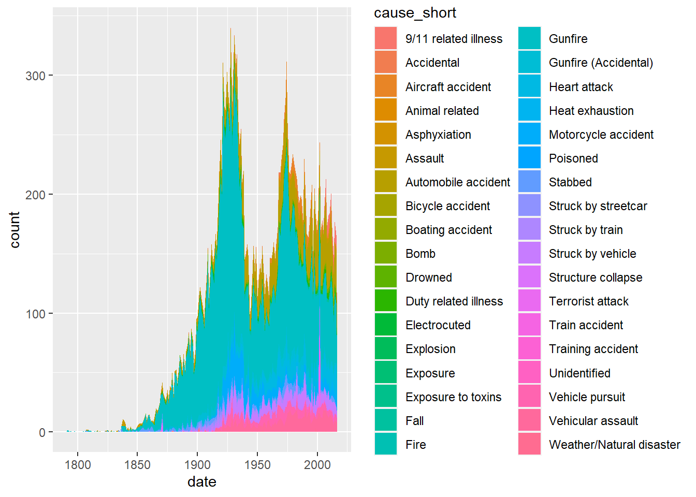
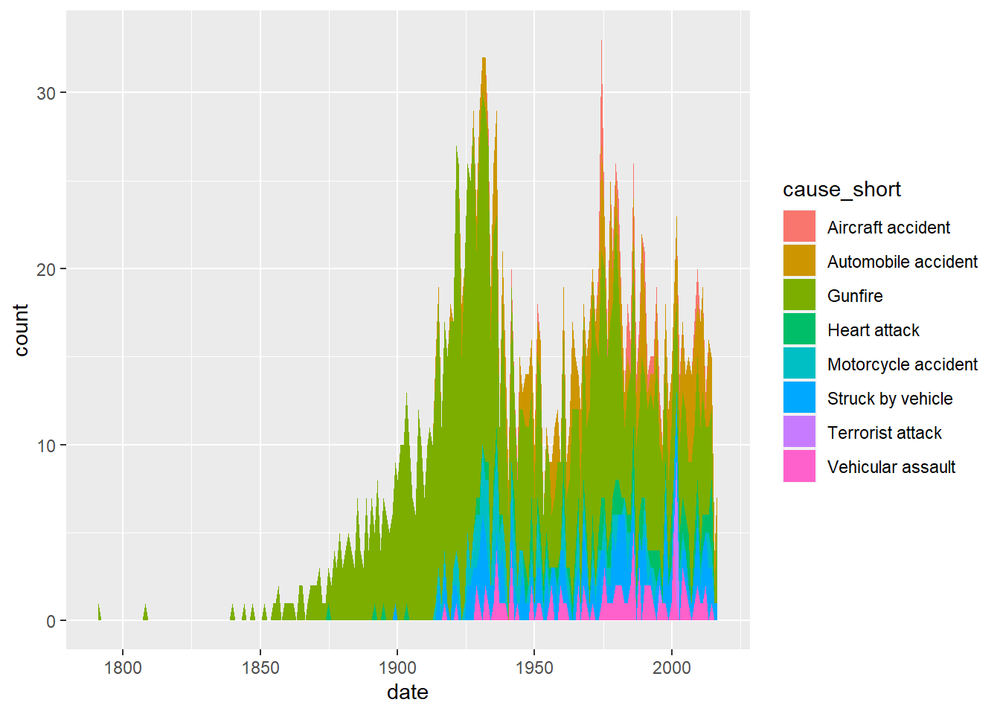
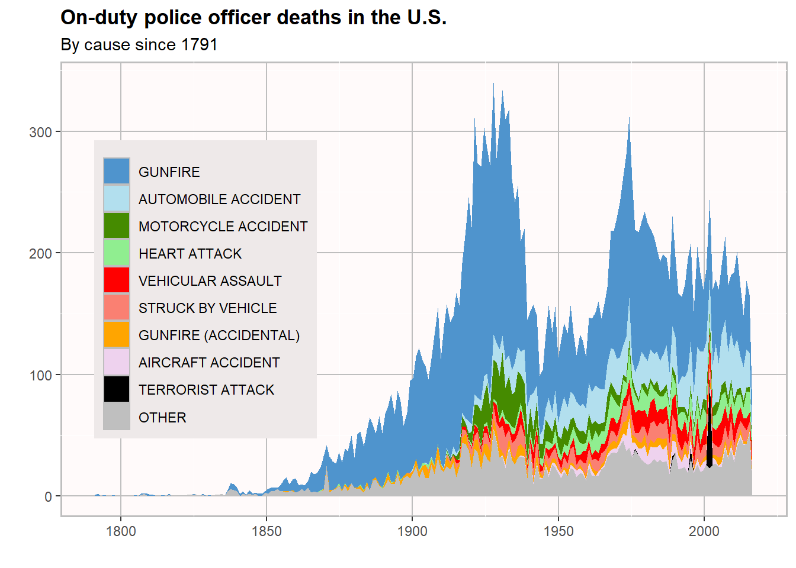
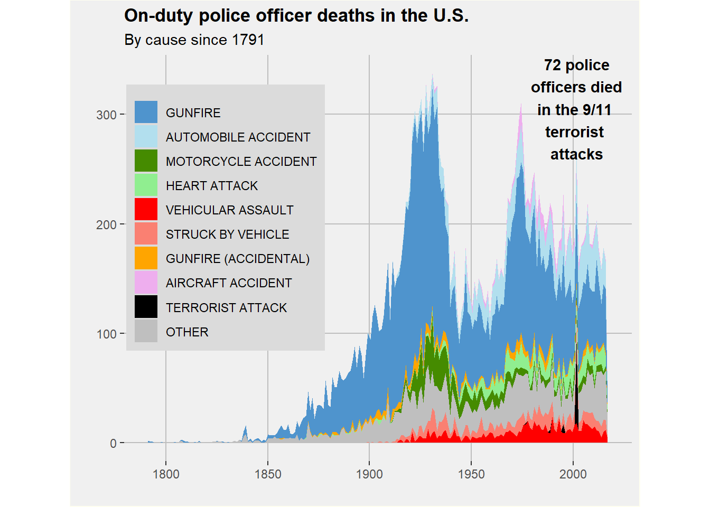
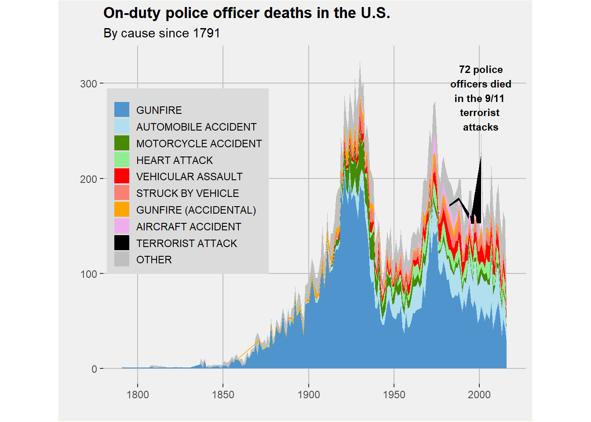

I will attempt to recreate the following graph:
FiveThirtEight original source
538 Repository (I only used the cleaned data file)
Original Graphic
Load Libraries.
## Warning: package 'tidyverse' was built under R version 4.0.5## -- Attaching packages --------------------------------------- tidyverse 1.3.1 --## v ggplot2 3.3.5 v purrr 0.3.4
## v tibble 3.1.5 v dplyr 1.0.7
## v tidyr 1.1.4 v stringr 1.4.0
## v readr 1.4.0 v forcats 0.5.1## Warning: package 'ggplot2' was built under R version 4.0.5## Warning: package 'tibble' was built under R version 4.0.5## Warning: package 'tidyr' was built under R version 4.0.5## Warning: package 'dplyr' was built under R version 4.0.5## -- Conflicts ------------------------------------------ tidyverse_conflicts() --
## x dplyr::filter() masks stats::filter()
## x dplyr::lag() masks stats::lag()## Warning: package 'here' was built under R version 4.0.5## here() starts at C:/Users/algla/OneDrive/Desktop/MADA/AMANDAGLATTER-MADA-portfolio## Warning: package 'extrafont' was built under R version 4.0.5## Registering fonts with RLoad data.
Let’s start recreating this plot using ggplot2. 
Here is another attempt only using the categories on the original figure, excluding the other category. 
I’m not sure why the y axis is only in the tens here while it is in the 100s in the first graph.
As previously stated, there are too many categories, so we have to refine the list down to aircraft accident, automobile accident, gunfire, gunfire (accidental), heart attack, motorcycle accident, struck by vehicle, terrorist attack, vehicular assault, and put the rest into the “other” category.
It looks like we have a lot of wrangling and cleaning up to do.
First, I am putting any cause that is not one of the listed causes into a separate “other” category. Next, I will reclassify the date column from column to dates. Then, I will change all the cause_short names so they are all capitalized like in the original image. I reorder the causes so they appear in the correct order on the legend. Then comes plotting!
Now that we’ve wrangled, let’s create the actual plot.
## Scale for 'colour' is already present. Adding another scale for 'colour',
## which will replace the existing scale.
There are still many problems with the plot I created. There are smaller issues like font, dimensions, border, and the inclusion of the arrow pointing to the spike in terrorist-caused deaths on 9/11. The largest issues is that the the actual data appears differently.
At this point, I have shared the above graph with classmates and have gotten feedback. I’m going to take their advice and try again. Now I’m going to continue to alter the figure’s details, like changing the font of the axes to match the original.
Here are some of the changes I plan to make:
Using “plot.background” instead of “panel.background”
Remove minor gridlines
Make the gridline, legend, and background colors more accurate
## Scale for 'colour' is already present. Adding another scale for 'colour',
## which will replace the existing scale.## Scale for 'fill' is already present. Adding another scale for 'fill', which
## will replace the existing scale.My figure: 
Next, I wrangle the data by adding each death cause by year.
## # A tibble: 1,151 x 3
## # Groups: year [202]
## year Cause n
## <int> <chr> <int>
## 1 1791 GUNFIRE 2
## 2 1792 GUNFIRE 1
## 3 1794 GUNFIRE 1
## 4 1797 GUNFIRE 1
## 5 1804 GUNFIRE 1
## 6 1806 OTHER 1
## 7 1807 GUNFIRE 1
## 8 1808 GUNFIRE 2
## 9 1808 OTHER 2
## 10 1810 GUNFIRE 1
## # ... with 1,141 more rowsNow that I have properly wrangled my data, I can really start to make an accurate graph! Took long enough!
## Scale for 'colour' is already present. Adding another scale for 'colour',
## which will replace the existing scale.## Scale for 'fill' is already present. Adding another scale for 'fill', which
## will replace the existing scale.I think this is as close as it is going to get, and I’m feeling much better about the product. The key difference was using the factor function to change the stacking of the different areas and to use the dodge position instead of bins. Using the “scale_fill_manual” function was also incredibly helpful. To achieve this last visual I did end up wrangling more, using the functions “pivot_longer()”, “group_by()”, and “count()”. I am not sure if this ended up being necessary, but I learned a lot in the process.
Dr. Handel and my peers were making suggestions that ultimately proved correct, namely changing the stacking of the areas. I am not surprised that they were correct. With trial and error, their advice became much more clear. I’m grateful to have such a perceptive team to offer their guidance!
Here is my final product and the comparison to the original:

Original Figure: